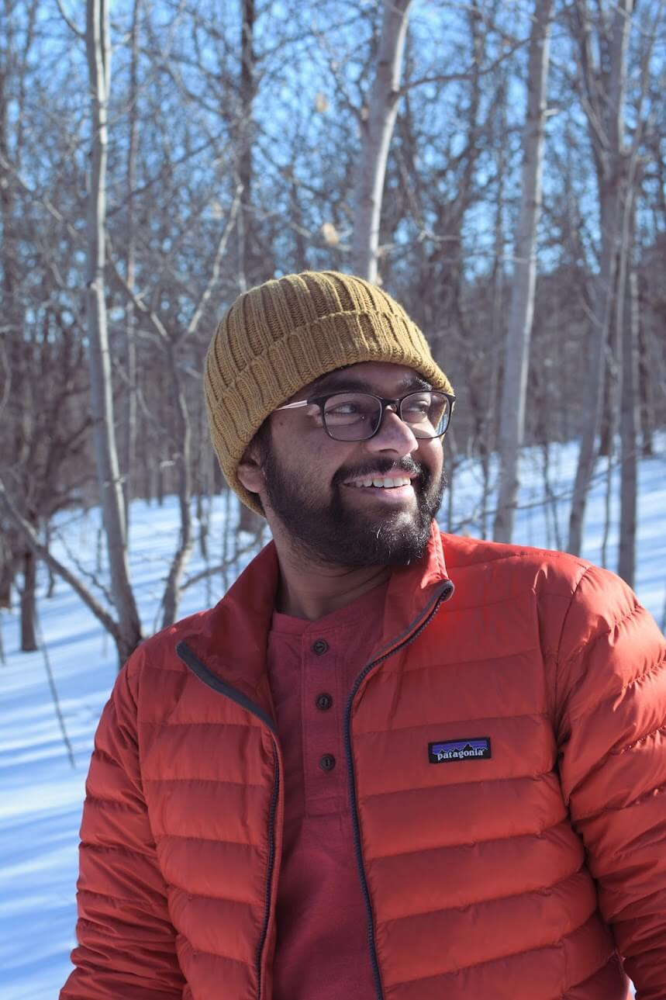
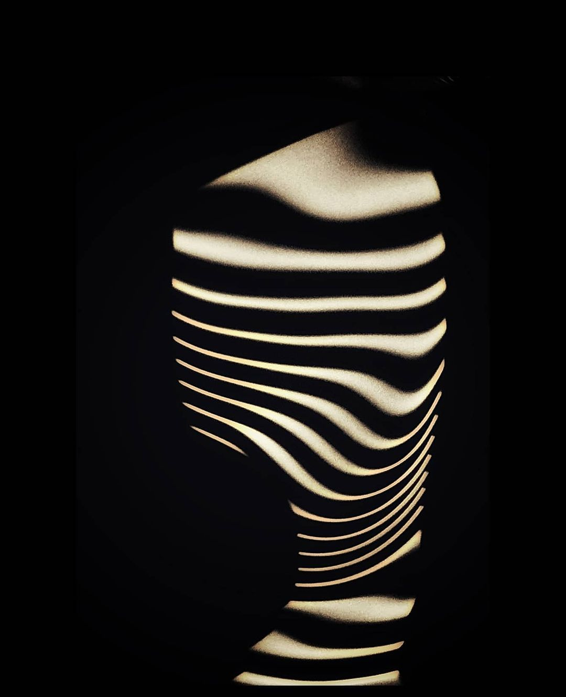
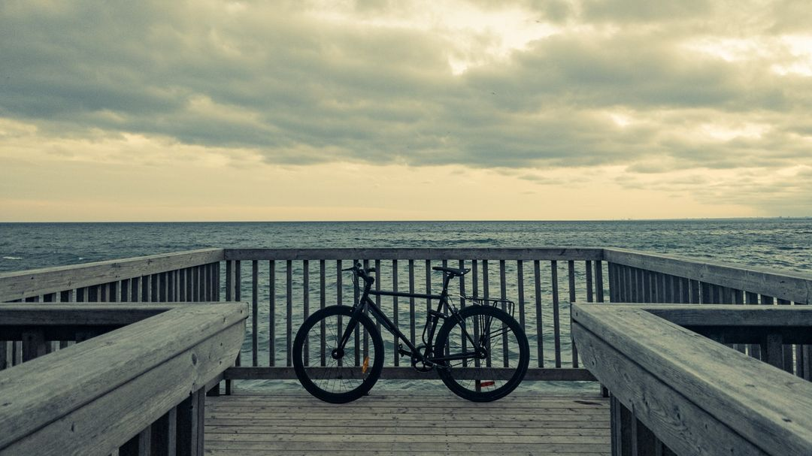
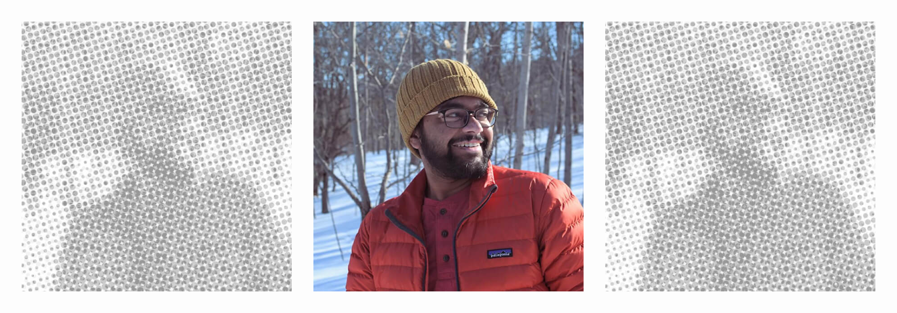
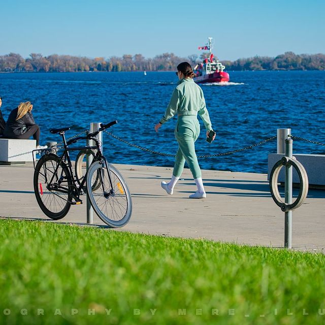
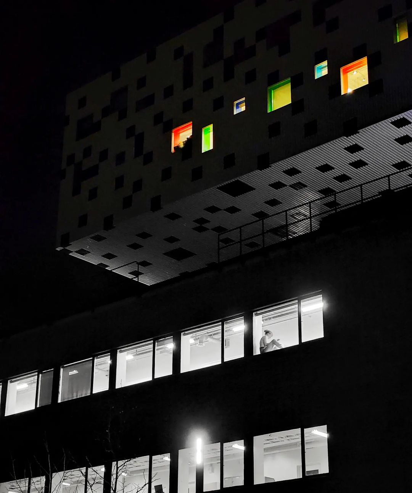

I've always been a creative problem solver...
My story alongside some random original photography

A natural curiosity has driven me since childhood. I yearned to understand the inner workings of everything, from beloved toys to the potential of a bionic arm. This fascination fuelled my love for math, physics, and engineering, leading me naturally to software engineering in high school.
During my third year of engineering college, Google Research India's Summer School opened my eyes to the world of Human-Computer Interaction (HCI). It was a turning point. HCI offered the perfect blend of my technical skills and design thinking, allowing me to create user experiences that truly mattered. My existing knowledge of engineering suddenly became a valuable asset in this new field.

However, what truly drew me to UX design was the nature of the problems it addressed. While I loved the rigor of hardcore engineering, HCI presented a new challenge: solving complex, open-ended problems focused on people. Here, I could utilize my analytical skills to understand user needs and design solutions that not only functioned flawlessly but also resonated on a deeper level.
I've always been fascinated by people's motivations and how they interact with technology. Helping family and friends navigate the latest gadgets solidified my desire to bridge the usability gap in modern tech products. There's a long way to go, but I'm excited to be a part of the solution.
Combining this newfound passion with my technical background, I began working at a seed-stage startup during my fourth year of engineering college. This experience allowed me to collaborate with designers and developers, honing my skills further.
Simultaneously with pursuing my Masters in UX Design, I embarked on a journey of exploration and growth. I tackled freelance design and development projects, interned at leading investment firms in Canada, and contributed to design research for the largest capital project at the University of Toronto. To maintain a healthy work-life balance, I even delivered food by bike – fueling both my body and my design hustle.
Today, as I embark on my next adventure, I continue to refine my skills through personal projects and volunteer work. Most recently, I explored the concept of open-source design by providing UX consultation to the Ethereum Foundation.
My passion lies in creating intuitive and user-centered experiences that empower people. I believe technology should be seamless, not a source of frustration. This dedication to understanding user psychology and crafting effective interfaces is what drives me forward in the ever-evolving world of UX design.


Hello there!
I'm Lakshya, a product designer based in Toronto, Canada. I am a major tech geek as well as a creative.
I believe that UX professionals are like architects. They are generalists in the sense that they should be able to think about people and their needs, feasibility and development, businesses and their goals and values, equity, aesthetics - all coming together to identify opportunities and solve problems.
My love for design and tech extends beyond just digital. I find principles of urban planning, architecture, mechanics, electronics and AI really fascinating!
my background
Born to an artist and an engineer in Jaipur (India), I grew up to be passionate about both technology and design. My childhood was spent taking apart new toys out of curiosity and making mock gadgets out of cardboard, pens and glitter tape because it was cool and fun. (YAY! Paper Prototypes!)
how i ended up as a product designer
In summer of 2020, I participated in Google's Research AI Summer School where I first heard the term HCI (Human-Computer Interaction). I stayed up the whole night watching talks from UX professionals and was instantly hooked! - a true moment of revelation.
A few weeks later, I started volunteering at a startup to work as a machine learning engineer but found myself analysing UX issues in the product even before I had any formal training. One year later, I started my masters in UXD at the University of Toronto - Life's full of surprises, huh?
I have a loooooot of hobbies!
I love exploring urban and natural landscapes alike. You can often find me taking photographs, playing my guitar or just biking around town! Check out some of my photography below :D
